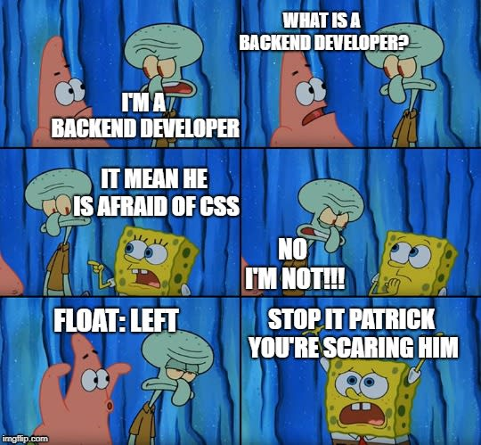
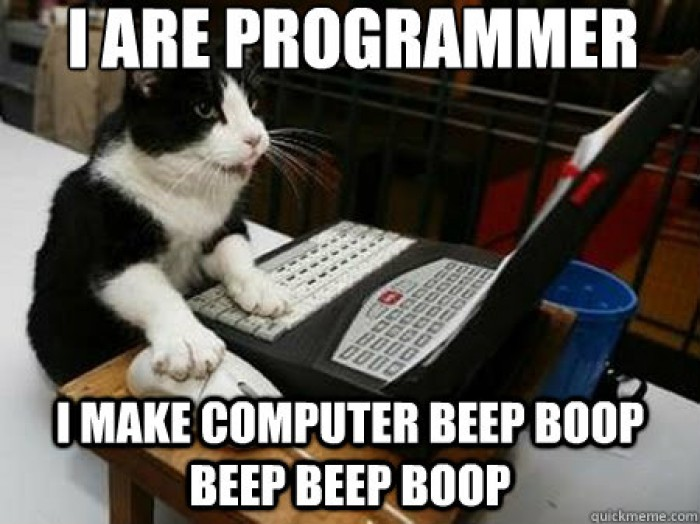

number 1
Programming is never easy.
Whether it's forntend, backend or fullstrack. You have to put up the time and effort to throughly
learn the tools.
Programming is never easy.
Whether it's forntend, backend or fullstrack. You have to put up the time and effort to throughly
learn the tools.
Cascading Style Sheets aren't a walk in the park, but with a little perseverance, you'll get there, you'll learn.go - programming memes
The path is looong and bumpy, lots of stress, lots of coffee, lots of hours spent on looking for solutions. You're probably asking yourself: is it worth it? - IT IS!!!!!
